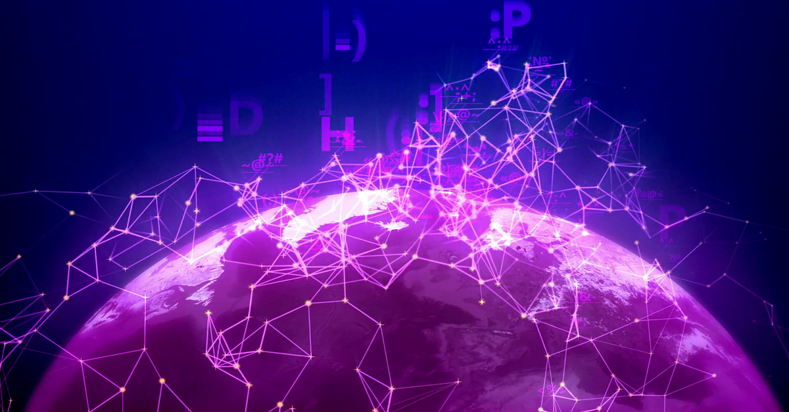

"As the world is increasingly interconnected, everyone shares the responsibility of securing cyber space"
- Newton Lee
With the exceptionally quick evolution of technology, computers are critical to maintaining a secure set of systems
that stop institutions and even just normal members of the public from falling victim to cyber crime. The development
of computer science means scientists and mathematicians can continue to find newer and better ways of securing data and
the internet.
Hover over the images to learn about the different was Computer Science has helped the world stay safe online.

Network components can now be constructed to ensure firewalls and other browser isolation systems can be
securely configured allowing for a strong perimeter security. For national institutions, such as NHS, GCHQ and other civil service groups
this very important.
Encryption and cryptography has been greatly improved by the addition of computers into the field. In the past,
messages and data could only be encrypted via mechanical machines at best, otherwise, they were encoded and decoded by hand.
Communication has seen exceptional development. Prior to today there was no way of sending secure messages besides
manually encrypting. Thanks to computer science, almost all forms of communication is secure and safe, regardless of how far you're calling from.
The field is far from done developing. Newer emerging technology, such as quantum computer science, could pave the way to even more secure
world. Since quantum computers are even stronger than today's fastest supercomputer, their encryption algorithms could be utterly undefeatable.
But technology hasn't always been this enhanced. Only in recent years has computer science played such a fundamental part in
keeping data secure and preventing malware.
Play through the carousel to watch the evolution of security in computer science.
SEPARATOR TEXT
STATISTICS
During the pandemic, there was a 44% rise in ransomware attacks across the health sector alone, while other sectors faced a 22% increase in attacks [1]
With 46% of the working population being asked to work from home, communication and security infrastructure proved more important than ever.
Computer sciencenst, programmers and mathematicians came together to develop infection control systems such as the NHS track and trace app.
So what exactly is Data Science?
Data science is an interdisciplinary field that uses scientific methods, processes,
algorithms and systems to extract knowledge and insights from noisy structured and unstructured data, and apply knowledge and actionable insights
from data across a broad range of applications.
AUTHOR SPACE: hello whoever is writing this - I've left you this little box to include my author information.
Thanks bestie.